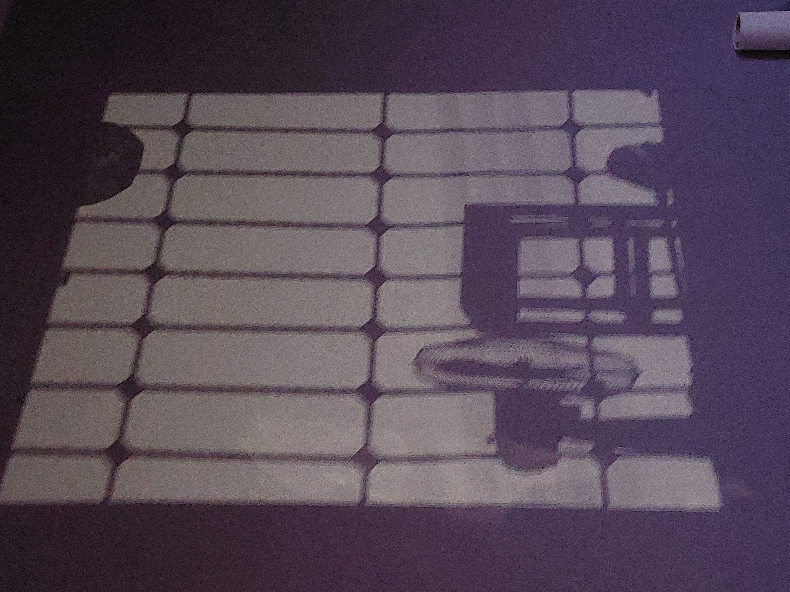

Le tribunal de la nuit
La nuit s'étire
en longues pages,
Écrites d'encre
et de silences.
Elle ne dort jamais.
Elle veille,
immobile,
comme un dieu oublié
qui compterait
nos renoncements
au lieu des étoiles.
Chaque seconde
est un voyage
Entre l'absence
et l'espérance.
Je marche dans une chambre
où les murs ont appris mon nom,
où chaque craquement du bois
ressemble à une question
que personne n'a le courage
de poser.
Les lampadaires
sont des phares
Pour les naufragés
du sommeil ;
Ils éclairent
de faibles lueurs
Les rêves perdus
au réveil.
L'insomnie n'est pas l'absence
du sommeil.
C'est la présence excessive
de la conscience.
Le temps murmure
sans visage,
Les murs retiennent
les soupirs.
À cette heure,
les souvenirs cessent
de mentir.
Mon cœur feuillette
son passage
Parmi les souvenirs
à dire.
Ils retirent leurs masques,
ouvrent leurs cicatrices
et réclament leur part
de vérité.
Le temps devient liquide.
Il goutte lentement
sur les nerfs,
sur les regrets,
sur les promesses
que j'ai laissées mourir
dans les poches des saisons.
Je comprends alors
que le silence
n'est pas vide.
Il est peuplé
de toutes les paroles
que nous avons sacrifiées
pour préserver
des paix fragiles.
La nuit est un tribunal
sans juge.
On y comparaît seul,
face à soi-même,
sans avocat,
sans témoin,
sans possibilité d'appel.
Et le verdict est
toujours le même :
nous sommes des voyageurs
qui confondent souvent
la lumière avec le bruit,
l'amour avec la peur,
la certitude avec l'habitude.
Puis l'aube arrive.
Elle ne sauve
personne.
Quand l'aube entrouvre
sa fenêtre,
Les ombres rangent
leurs secrets.
L'insomnie s'efface
peut-être,
Mais laisse un poème
inachevé.
Elle déplace
simplement
les ombres
afin que les vivants
puissent recommencer
à oublier
ce que la nuit
leur avait révélé.
Et moi,
je reste là,
les yeux ouverts,
à écrire
des chroniques insomniaques,
comme on grave
son nom
sur la paroi
d'un gouffre,
dans l'espoir insensé
que l'écho réponde un jour
Djamel Metref
At Yenni le 5 Août 2026
← Tous les poèmes
Le tribunal de la nuit
Angoisse et solitude · Écriture et poésie